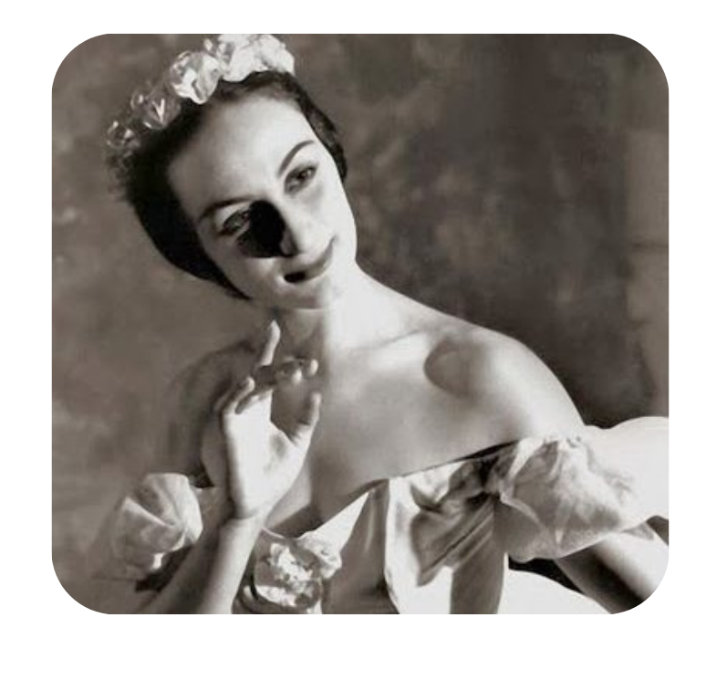
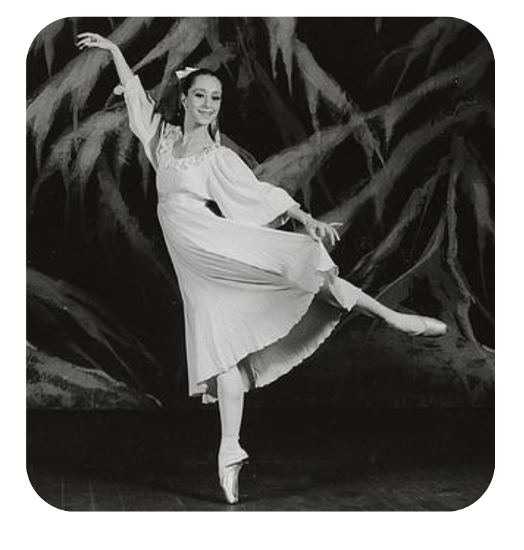
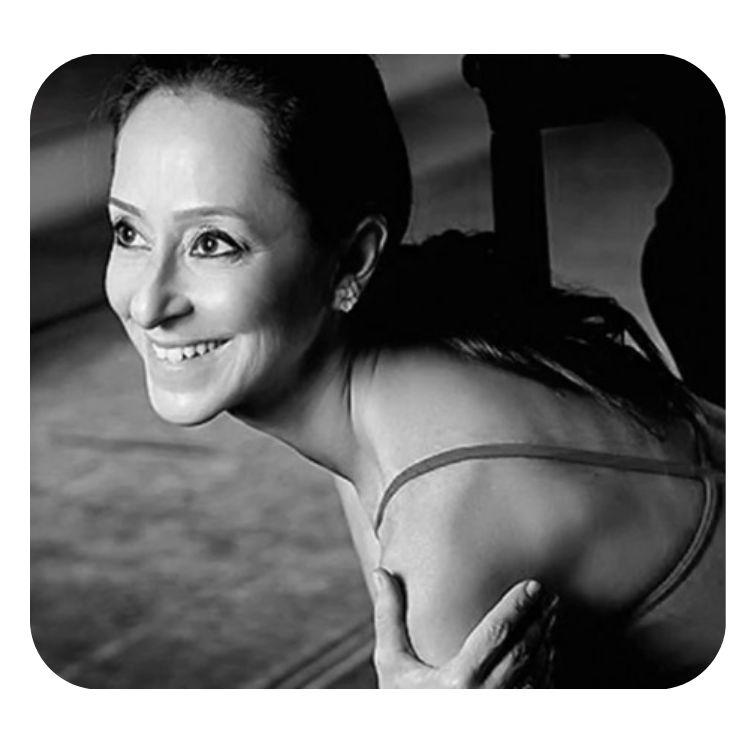
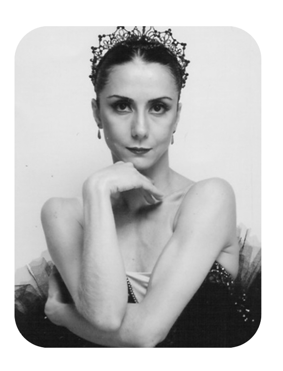
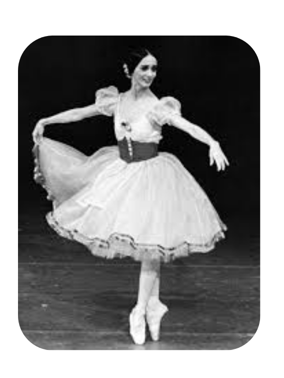
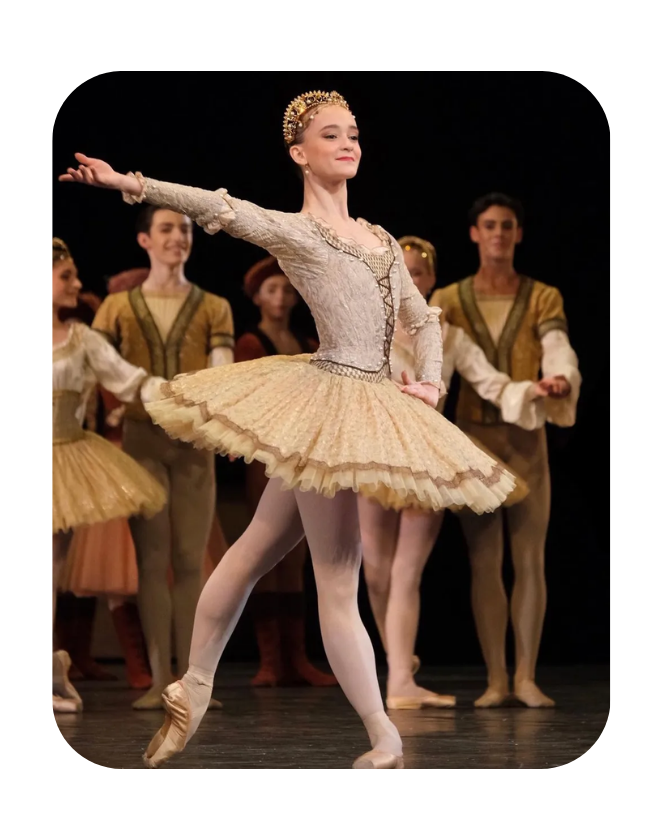

O ballet clássico é uma arte que atravessou séculos para se tornar o que conhecemos hoje. Sua origem remonta às
cortes do Renascimento Italiano, mas foi na França que a dança ganhou regras, nomes e a estrutura técnica que
ainda utilizamos. O que começou como uma exibição de nobreza e etiqueta nos salões palacianos, evoluiu para uma
disciplina rigorosa que exige o máximo do corpo e da mente.
No século XIX, o período Romântico trouxe a leveza etérea, as sapatilhas de ponta e os grandes ballets de
repertório que contam histórias de amor, magia e tragédia. No entanto, foi apenas no início do século XX que
essa tradição fincou raízes profundas em solo brasileiro. Através do esforço de pioneiros e da criação de
instituições como o Theatro Municipal, o Brasil deixou de ser apenas um espectador das companhias europeias para
se tornar um celeiro de talentos reconhecidos mundialmente.
Hoje, o ballet brasileiro é sinônimo de garra e versatilidade. Nossa história é escrita por nomes que desafiaram
distâncias e preconceitos para brilhar nos palcos mais prestigiados do mundo, provando que a técnica clássica,
quando unida à alma brasileira, cria um legado inesquecível.
Russa de nascimento, brasileira de coração e alma a grande pioneira do ensino profissional de dança no país. Em 1927, fundou a Escola de Danças do Theatro Municipal do Rio de Janeiro, sendo a responsável por institucionalizar o ballet clássico em solo brasileiro e formar as primeiras gerações de mestres e bailarinos nacionais.


A grande impulsionadora do ballet nacional, foi uma das maiores incentivadoras da dança no Brasil, Dalal foi responsável por popularizar o ballet e trazer grandes estrelas internacionais para os palcos brasileiros. Criou a Fundação Ballet do Rio de Janeiro e projetos sociais que provaram que a técnica clássica pode e deve pertencer a todos, independentemente da origem.
Considerada o maior nome da dança clássica no Brasil, iniciou sua trajetória aos seis anos e, aos onze, já estreava no Theatro Municipal do Rio de Janeiro. Protagonizou os maiores clássicos mundiais, como “O Quebra-Nozes” e “Giselle”, somando 127 ballets de repertório. É a principal embaixatriz da arte no país, simbolizando elegância e dedicação absoluta.


Bailarina brasileira com o maior número de apresentações do ballet “O Lago dos Cisnes” no exterior. Recebeu o título de Embaixatriz da Dança pelo Conselho Brasileiro de Dança e representa oficialmente o país na UNESCO. Atualmente, dedica-se à formação de novos talentos como ensaiadora e curadora artística.
Considerada uma das maiores bailarinas do século XX, foi musa de grandes coreógrafos europeus e diretora do Ballet de Stuttgart. Conhecida por sua extraordinária capacidade dramática, provou que o ballet é uma arte de profunda interpretação, recebendo honrarias nos maiores centros culturais do mundo.


Fenômeno da nova geração, Sagioro é uma das raríssimas brasileiras a integrar a prestigiada Ópera de Paris. Sua jornada de dedicação extrema, documentada mundialmente, tornou-a um símbolo de persistência para jovens que sonham em conquistar os palcos mais tradicionais e rigorosos da Europa.